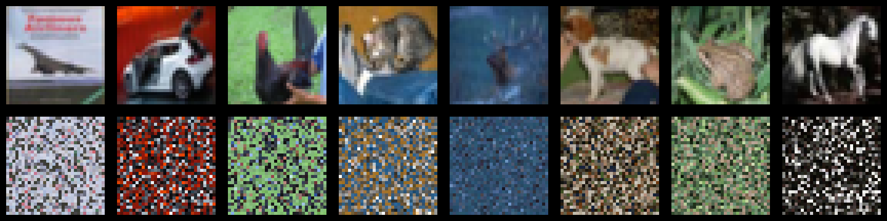
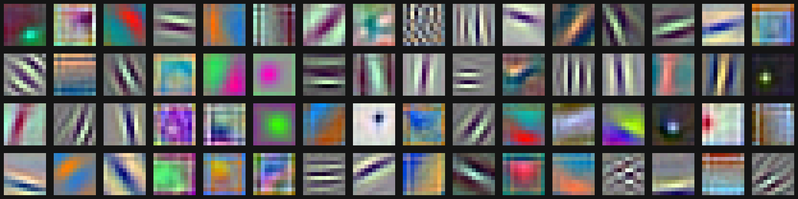
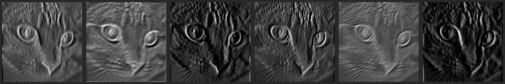
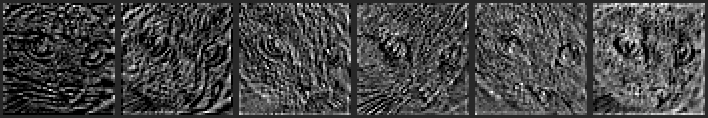
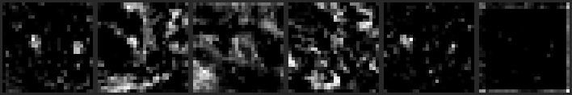
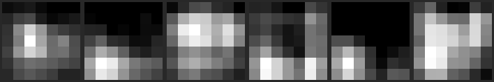
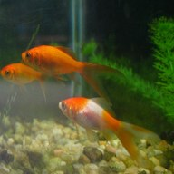

Today in one sentence
locality
translation invariance
1 · the convolution
what one layer computes, and why
2 · a whole network
pooling, LeNet, what the layers learn
3 · the ImageNet era
AlexNet, VGG, GoogLeNet, ResNet: one idea each
Convnets are everywhere
 Egyptian cat 0.63 · tiger cat 0.19 · tabby 0.17
Egyptian cat 0.63 · tiger cat 0.19 · tabby 0.17- reading digits: LeNet read handwritten cheques in the late 1990s
- medical images: tumour segmentation, retina screening
- cars and robots: camera image → what is around → what to do
- image generation: the denoising network inside diffusion and flow-matching models is a convnet (UNet, lecture 7)
- also on non-images: audio spectrograms, board games, protein contact maps
Photos: “Chelsea the cat” (S. van der Walt, CC0, scikit-image); bison: WikiImages, Pixabay licence.
A puzzle: shuffle the pixels

- pick one random permutation of the 32·32 pixel positions
- apply it to every image, training and test
- train a network on the shuffled images
CIFAR-10: Krizhevsky (2009).
Experiment: MLP vs convnet, original vs shuffled pixels
Our run: experiments/shuffled_pixels.py (Adam, CIFAR-10).
From a dense layer to a convolution, in two steps
| number of weights | dense | local | local + shared |
|---|---|---|---|
| 1D, 8 inputs → 8 outputs (above) | 64 | 22 | 3 |
| image 224×224×3 → 224×224×64, 3×3 neighbourhood | 4.8·10¹¹ | 8.7·10⁷ | 1,728 |
Local + shared ⇒ a shifted pattern gives a shifted response
Shift the input by $s$: output $i+s$ now sees exactly the window that output $i$ saw before, with the same weights, so $y'_{i+s} = y_i$.
Only local: the shifted pattern meets other weights and gives other numbers. The network would have to learn "a corner" separately at every position.
Only shared, not local (one weight for all inputs): every output is the same sum, position is lost.
A convolution, on numbers
Slide the kernel over the image; at every position take the dot product with the patch under it. This kernel responds to dark → bright vertical edges. (Mathematicians call this cross-correlation; deep learning calls it convolution.)
Two questions before we try kernels
For each: what does the image look like afterwards, and which kernel computes it?
Photo: “Chelsea the cat” (S. van der Walt, CC0, scikit-image).
Different kernels detect different things
Do not design the kernel: learn it
Padding and stride
- padding $p$: a border of zeros; with stride 1, $p = (k-1)/2$ keeps the size (“same”)
- stride $s$: the step of the window; $s = 2$ halves the size
Many channels: a volume in, a volume out
- a filter spans all input channels: $k \times k \times C_\text{in}$
- each filter gives one output channel (feature map); $C_\text{out}$ filters → $C_\text{out}$ maps
- weights: a tensor $C_\text{out} \times C_\text{in} \times k \times k$
- parameters: $C_\text{out}\,(C_\text{in} k^2 + 1)$
Two views of a volume, and the 1×1 convolution
A 1×1 convolution = the same dense layer $\mathbb{R}^{C_\text{in}} \to \mathbb{R}^{C_\text{out}}$ applied to every pixel’s feature vector.
- mixes channels, does not look at neighbours
- parameters: $C_\text{out}(C_\text{in} + 1)$
- cheap way to change the number of channels: e.g. 256 → 64 before an expensive 3×3 convolution (GoogLeNet, ResNet, later today)
A convolution is a dense layer with a special matrix optional
- 1D, $k = 3$, no padding: $\mathbb{R}^6 \to \mathbb{R}^4$
- most entries are fixed to 0 (locality), the rest are tied (sharing)
- backprop: a shared weight collects the gradient from every position $$\frac{\partial L}{\partial w_1} = \sum_{i} \frac{\partial L}{\partial y_i}\, x_{i}$$
- a convnet is “just” an MLP with a strong prior on its weight matrices
- a view for the maths only: this matrix is never built, the zeros are never multiplied (next slide)
In practice: im2col + one matrix product optional
copy every window into one row (“image to columns”), then multiply by the kernel:
$$\begin{bmatrix} y_1\\ y_2\\ y_3\\ y_4 \end{bmatrix} = \begin{bmatrix} x_1 & x_2 & x_3\\ x_2 & x_3 & x_4\\ x_3 & x_4 & x_5\\ x_4 & x_5 & x_6 \end{bmatrix} \begin{bmatrix} \color{#ff6b6b}{w_1}\\ \color{#5fd38d}{w_2}\\ \color{#5ab0ff}{w_3} \end{bmatrix}$$same result as the banded matrix, but only the $k$ non-zero products per output are computed
- 2D, many channels: one dense matrix product $$\underbrace{(H'W')\times(k^2 C_{\text{in}})}_{\text{windows}} \cdot \underbrace{(k^2 C_{\text{in}})\times C_{\text{out}}}_{\text{all filters}}$$ the operation GPUs are fastest at
- cost $H'W' \cdot k^2 C_{\text{in}} \cdot C_{\text{out}}$ multiply-adds: locality is what makes it cheap
- the window matrix is $k^2$ times larger than the image, so libraries (cuDNN) build it on the fly in fast on-chip memory (“implicit GEMM”), or use Winograd (3×3) or FFT (large kernels)
Check yourself
Input volume 33×33×5. Apply 10 filters of size 3×3, stride 2, no padding.
Answers
output size
$$\left\lfloor \frac{33 - 3}{2} \right\rfloor + 1 = 16 \;\Rightarrow\; 16 \times 16 \times 10$$parameters
$$10 \cdot (\underbrace{3 \cdot 3 \cdot 5}_{\text{one filter}} + \underbrace{1}_{\text{bias}}) = 460$$the same in PyTorch
conv = nn.Conv2d(in_channels=5, out_channels=10,
kernel_size=3, stride=2, padding=0)
x = torch.randn(1, 5, 33, 33) # (batch, C, H, W)
conv(x).shape # [1, 10, 16, 16]
conv.weight.shape # [10, 5, 3, 3]
conv.bias.shape # [10]
sum(p.numel() for p in conv.parameters()) # 460
The output size does not depend on the number of filters; the parameter count does not depend on the image size.
Shift the input, the feature map shifts with it
translation equivariance: a pattern is detected wherever it appears
Except near the border: the window overlaps the zero padding, part of the response is cut off, and on a grey background the padding creates a fake edge (try it).
Not built in: rotation, scaling, colour changes: data augmentation (later today).
Max pooling
- each channel separately; no parameters
- 2×2, stride 2: halves height and width (224×224×64 → 112×112×64)
- keeps the strongest response: a feature shifted by a pixel gives the same output (local invariance)
- average pooling: the mean instead of the max
Putting it together: LeNet-5 (LeCun et al., 1998)
| layer | output | parameters |
|---|---|---|
| conv 5×5, 6 | 28×28×6 | 156 |
| conv 5×5, 16 | 10×10×16 | 2,416 |
| dense 400 → 120 | 120 | 48,120 |
| dense 120 → 84 → 10 | 10 | 11,014 |
- conv → pool → conv → pool → dense: the template for the next 15 years
- convolutions: 4% of the parameters, most of the computation
- 1998: tanh and average pooling; above the modern variant (ReLU, max pool)
Check yourself
Receptive field
coloured: one pixel and the window it is computed from in the previous layer · amber: everything the output pixel depends on
What do the layers learn?

Nobody designed these: they are what gradient descent found useful.
112×112

56×56

28×28

14×14
7×7

Our figures from torchvision’s pretrained weights: experiments/features.py.
The same hierarchy in the visual cortex optional
- Hubel & Wiesel (1959–62), recording single neurons in the visual cortex of cats; Nobel Prize 1981
- the cortex keeps the layout of the visual field (topographic map): neighbouring neurons see neighbouring regions
- inspired Fukushima’s Neocognitron (1980) → LeCun’s convnets (1989)
An analogy and a historical source of ideas, not a model of the brain.
ImageNet: top-5 error of the winners
- ILSVRC: 1.2 M training images, 1,000 classes (incl. 120 dog breeds)
- top-5 error: the right class is not among the 5 best guesses
- grey: hand-designed features + linear classifiers; blue: convnets
- human: one trained annotator, after practice (Karpathy, 2014)

Sample images: ImageNetV2 (Recht et al., 2019), collected from Flickr with the ImageNet procedure, same 1,000 classes.
AlexNet (Krizhevsky, Sutskever, Hinton, 2012)
data
1.2 M labelled images (ImageNet)compute
2 GTX 580 GPUs (3 GB each), 5–6 daysalgorithms
ReLU, dropout, data augmentation; 60 M parametersTop-5 error 16.4% vs 26.2% for the runner-up: the end of hand-designed features in vision.
Data augmentation: same label, new image
AlexNet: random 224×224 crops of 256×256 images + horizontal flips (2048× more images) + colour perturbation. Teaches the invariances that convolution does not build in.
Photo: WikiImages, Pixabay licence.
Test-time augmentation
AlexNet averaged its predictions over 10 crops: the 4 corners, the centre, and their mirror images. Here: torchvision’s pretrained AlexNet on our photo; 4 crops say “water buffalo”, the average says “bison”.
Our run: experiments/tta.py.
Check yourself
Use augmentation consciously
rotation by 180° turns a 6 into a 9
a horizontal flip turns “b” into “d”
a hue change turns “stop” into “go”
VGG (Simonyan & Zisserman, 2014): two design rules
1 · only 3×3 convolutions
Two 3×3 layers see a 5×5 region, three see 7×7, with fewer weights ($C$ channels in and out):
| sees | one kernel | stack of 3×3 |
|---|---|---|
| 5×5 | $25\,C^2$ | $2 \cdot 9\,C^2 = 18\,C^2$ |
| 7×7 | $49\,C^2$ | $3 \cdot 9\,C^2 = 27\,C^2$ |
and a ReLU between them: more nonlinearity.
2 · halve the size, double the channels
Cost of a $k \times k$ convolution on an $H \times W \times C$ volume (multiply-adds):
$$H W C^2 k^2 \;=\; \tfrac{H}{2}\cdot\tfrac{W}{2}\cdot(2C)^2 k^2$$Every stage costs about the same; the network gets thinner and deeper in features.
VGG-16
- 13 convolutions (all 3×3, stride 1, padding 1) + 5 max-pools + 3 dense layers = 16 weight layers
- 138 M parameters; 7.3% top-5 error, 2nd in 2014; simple to implement, still a common baseline
- trained 2–3 weeks on 4 GPUs; deeper versions were initialized from shallower ones (no batch norm yet)
VGG-16: memory, compute and parameters per layer
Counts from torchvision’s VGG-16: experiments/arch_stats.py.
GoogLeNet (Szegedy et al., 2014): the inception module
- several kernel sizes in parallel; the network picks what it needs
- 1×1 convolutions shrink the channels before the expensive 3×3 and 5×5
Example: 28×28×256 → 32 channels, 5×5
| directly | 5·5·256·32 = 204,800 |
| 1×1 to 16, then 5×5 | 256·16 + 5·5·16·32 = 16,896 |
12× fewer weights (and multiply-adds)
GoogLeNet: no big dense layers
global average pooling: one number per channel; works for any input size
- 22 layers, 9 inception modules; 6.7% top-5 error, winner of 2014
- VGG’s first dense layer (7·7·512 → 4096) has 103 M weights; GoogLeNet’s only dense layer has 1 M
- 6.6 M parameters in total: 9× fewer than AlexNet, 20× fewer than VGG-16
- two extra classifiers in the middle during training (next slide)
GoogLeNet: two extra classifiers, only for training
- in 2014, 22 layers was very deep: with one loss at the top, the early layers got little gradient and trained slowly
- the side heads inject gradient into the middle of the network
- a workaround, not a fix: the training of deep networks was still fragile
- 2015: batch norm, then ResNet: 152 layers, one loss, no side heads (later today)
Batch normalization for convnets: one channel optional
Recall (lecture 4): normalize each feature with the mean and variance over the mini-batch, then scale and shift: $\;\hat x = \dfrac{x - \mu}{\sqrt{\sigma^2 + \epsilon}},\; y = \gamma\,\hat x + \beta$
Batch normalization for convnets
batch $N$ images, $C$ channels, each $H \times W$; for every channel $c$:
$$\begin{aligned} \mu_c &= \tfrac{1}{NHW} \textstyle\sum_{n,i,j} x_{n,c,i,j}\\ \sigma_c^2 &= \tfrac{1}{NHW} \textstyle\sum_{n,i,j} (x_{n,c,i,j} - \mu_c)^2\\ y_{n,c,i,j} &= \gamma_c\, \frac{x_{n,c,i,j} - \mu_c}{\sqrt{\sigma_c^2 + \epsilon}} + \beta_c \end{aligned}$$one row of the picture = one group: averaged over the batch and all positions, never across channels
Batch normalization for convnets: why per channel?
- a channel is one filter applied at every position: normalizing it the same way everywhere keeps the layer a convolution (equivariant)
- parameters: $\gamma, \beta$ per channel ($2C$), and running $\mu, \sigma^2$ per channel for test time
- intuition: adjust the brightness and contrast of each feature map, using statistics from all images in the batch
- convolution bias is redundant ($\beta$ does its job):
bias=False
the standard block since 2015
nn.Sequential(
nn.Conv2d(64, 128, 3, padding=1, bias=False),
nn.BatchNorm2d(128), # 128 γ, 128 β
nn.ReLU(),
)
Ioffe & Szegedy (2015): with batch norm the inception network trained 14× faster; it made the next step, very deep networks, trainable.
Deeper is not always better: the degradation problem
- plain convnets (conv, BN, ReLU) on CIFAR-10: 56 layers are worse than 20, already on the training set
- so it is not overfitting (that would be low training error, high test error)
- a better solution exists (below), gradient descent does not find it: an optimization problem
Schematic redrawn after He et al. (2016), Fig. 1 (curve shapes only, not their data); we did not rerun it: training 56-layer networks needs a GPU.
ResNet (He et al., 2015): learn a correction to the identity
- a residual block computes $\mathbf{y} = F(\mathbf{x}) + \mathbf{x}$
- $F = 0$ gives the identity: an extra block starts from “do nothing”, and only learns a correction
- gradient: $\frac{\partial \mathbf{y}}{\partial \mathbf{x}} = \frac{\partial F}{\partial \mathbf{x}} + I$: the identity path passes it on unchanged
Schematic redrawn after He et al. (2016) (curve shapes only, not their data).
ResNet blocks
- every convolution is followed by batch norm; ReLU after the sum
- bottleneck: 1×1 shrinks to 64 channels, the 3×3 works on few channels, 1×1 expands back (as in GoogLeNet)
- when the shape changes (stride 2, more channels), the shortcut is a 1×1 convolution with stride 2 instead of the identity
- no dense layers except the last one, after global average pooling
ResNet-50, stage by stage
| part | blocks | parameters |
|---|---|---|
| stem (7×7 conv) | 9.5 k | |
| stage 1, 56×56×256 | 3 | 0.22 M |
| stage 2, 28×28×512 | 4 | 1.22 M |
| stage 3, 14×14×1024 | 6 | 7.10 M |
| stage 4, 7×7×2048 | 3 | 14.96 M |
| dense 2048 → 1000 | 2.05 M | |
| total | 16 | 25.6 M |
| params | mult-adds | top-1 | |
|---|---|---|---|
| AlexNet | 61.1 M | 0.7 G | 56.5% |
| VGG-16 | 138.4 M | 15.5 G | 71.6% |
| GoogLeNet | 6.6 M | 1.5 G | 69.8% |
| ResNet-18 | 11.7 M | 1.8 G | 69.8% |
| ResNet-50 | 25.6 M | 4.1 G | 76.1% |
| ResNet-152 | 60.2 M | 11.5 G | 78.3% |
Convnets today
Vision Transformer (2020)
Cut the image into 16×16 patches, treat them as words, use a transformer (lectures 9–10). Its first layer is… a convolution:
nn.Conv2d(3, 768, kernel_size=16, stride=16)
Fewer built-in assumptions: needs more data, wins with very large data.
ConvNeXt (2022)
A ResNet, modernized step by step (larger kernels, training recipes of transformers), matches transformers on ImageNet.
still the default for
segmentation and detection (lecture 7), phones and robots, the denoising network of diffusion models (UNet)
Side note: 10 years of papers on one test set
- architectures were chosen by their score on the same validation set: overfitting to it?
- Recht et al. (2019) collected a new test set following the original procedure
- every model loses 11–13 points, but the ranking is preserved, on a straight line
- progress is real; the new images are harder
Our run: torchvision models on ImageNetV2, experiments/imagenetv2.py.
Summary
- convolution = dense layer + locality + weight sharing: a prior for images
- kernels are learned; a layer maps a volume $H \times W \times C_\text{in}$ to $H' \times W' \times C_\text{out}$
- output size $\lfloor (n + 2p - k)/s \rfloor + 1$; parameters $C_\text{out}(C_\text{in} k^2 + 1)$
- equivariant to shifts; pooling and augmentation add invariances
| new idea | |
|---|---|
| LeNet 1998 | conv → pool → dense |
| AlexNet 2012 | data + GPUs, ReLU, dropout, augmentation |
| VGG 2014 | only 3×3, double channels when halving size |
| GoogLeNet 2014 | 1×1 bottlenecks, global average pooling |
| ResNet 2015 | batch norm + residual blocks: 150+ layers |
Next
Lecture 7 (Wed, Nov 18)
Convnets that output images and boxes: UNet, object detection.
Feedback

Please spend a minute: your feedback helps me improve the next lecture.
tinyurl.com/mimuw-dnn-feedback
Anonymous, no login, three questions.